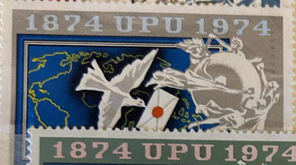
| SOURCE | TITLE| IMAGE MATCH | click to source page |
| eBay | Hungary, Magyar Posta Postage Stamp | eBay | 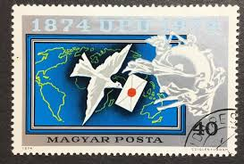 |
| eBay | Hungary Historical Events Stamps for sale | eBay | 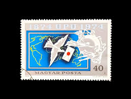 |
| CollectorBazar | Other Stamps | 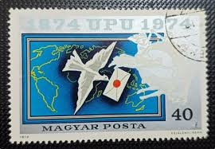 |
| Mystic Stamp Company | 2282-86 - 1974 Hungary - Mystic Stamp Company | 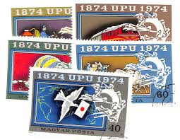 |
| eBay.de | Briefmarke: Serie Vögel: 40 F, Magyar Posta 1974, 1874 UPU 1974 | eBay.de | 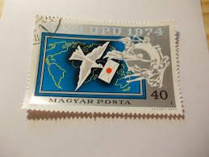 |
| Maps on Stamps | Maps on Stamps : Djibouti | A Database of Cartophilately | 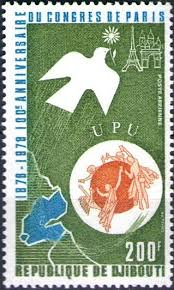 |
| Todocolección | o) 1977 hungary, wwf, birds, purple heron, whit - Buy Antique stamps of Hungary on todocoleccion | 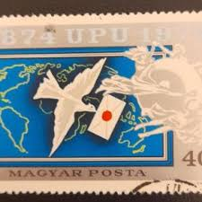 |
| eBay UK | 1974 HUNGARY MAGYAR POSTA STAMP 100TH ANNIVERSARY | eBay UK | 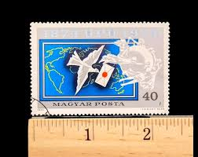 |
| eBay | Electronics, Cars, Fashion, Collectibles, Coupons and More | eBay | 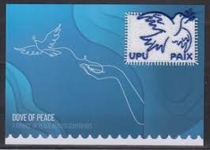 |
| Shutterstock | Universal Postal Union: Over 796 Royalty-Free Licensable Stock Photos | Shutterstock | 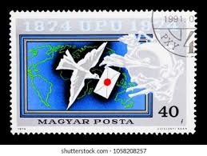 |
| Catawiki | Portugal - over 130 different blocks, miniature sheets, and stamp booklets — Portugal, Madeira and the Azores - auction online Catawiki | 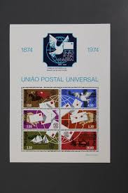 |
| Osta | Djibouti 1978; UPU,1 mark,puhas ** (247398879) - Osta.ee | 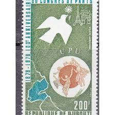 |
| UPU 2025 dove of Peace embroidered joint issue not valid for postage but a great collectibles to add to the collection Available on single postcard and in joint folder with United Nations ( | 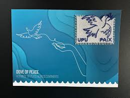 | |
| UPU souvenir sold at Philakorea: not valid for postage according to UPU staff | 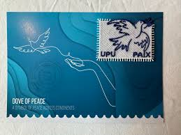 | |
| Leski Auctions | A real mixed bag with Colombia revenues to $20 with small puncture & 'SPECIMEN' Overprint (15 6 blocks of 4); 'BECHUANALAND/PROTECTORATE' KEVII Revenues 2/6d with postal cds; a very scrappy group of | 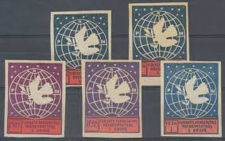 |
| eBay | Palau SC # 291-292 Fairy Tern and Yellow Ribbon. To Honor those Who Served .Mint | eBay | 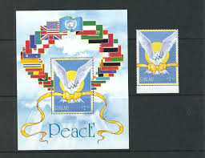 |
| eBay | Portugal 1974 | eBay | 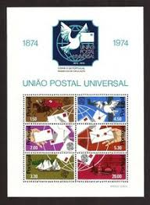 |
| Blogger.com | Welcome To Pakistan Philatelic Net Club: Centenary of Universal Postal Union (UPU) (October 9, 1974) | 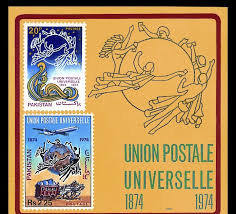 |
| Morning all. I hope you're having a great day so far. Today's Stamp of the Day, is this 30 cent stamp from the Federated States of Micronesia. Issued - 1993 Type - | 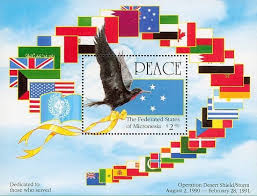 | |
| BidCurios | Birds Used Magyar Posta NPS0036 - BidCurios | 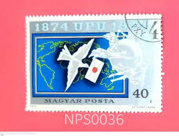 |
| eBay | Souvenir Sheet Pakistani Stamps (1947-Now) for sale | eBay | 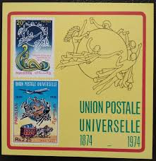 |
| eBay | 1974 UN FDC (9) 1874-1974 Universal Postal Union Centenary UPU ~ "Silk" Cachet | eBay | 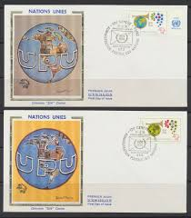 |
| PicClick | 👉 PALAU 1991 Palau 1991 Desert Shield & Desert Storm + S/S Mnh ** Flags, Birds $3.95 - PicClick | 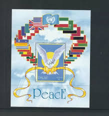 |
| TouchStamps | Stamp: Signatory of Cheuk Tat Li - Hongkong (UNO New York 2006) - TouchStamps | 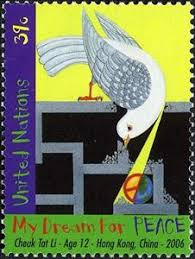 |
| eBay | Souvenir Sheet Pakistani Stamps (1947-Now) for sale | eBay | 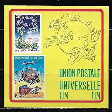 |
| vegas-stamps-hobbies.com | 1949 Globe and Doves Carrying Messages Single 15c Airmail Postage Stam – Vegas Stamps & Hobbies | 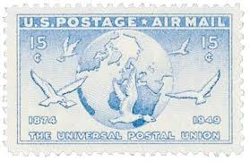 |
| Free stamp catalogue | Stamps from Palau with the theme Birds - Freestampcatalogue.com - The free online stampcatalogue with over 500.000 stamps listed. | 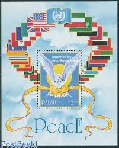 |
| Amazon.ca | Brazil 1453 (Complete.Issue.) unmounted Mint/Never hinged ** MNH 1974 100 Years UPU (Stamps for Collectors) : Amazon.ca: Everything Else | 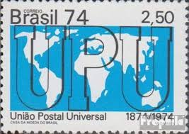 |
| eBay | PORTUGAL , 1974 , CENTENARY UPU , SOUVENIR SHEET , PERF , MNH , CV$6.25 | eBay | 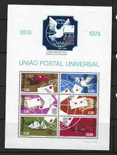 |
| eBay | BL) Albania 1946 #380,82,83, Perf & Imperf mint | eBay | 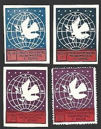 |
| mrussem.com | Notes on Postage Stamps - M. Russem Book Design | 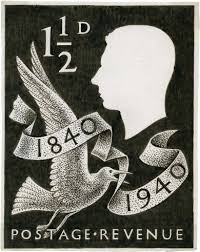 |
| GetArchive | 1124 (Hieraičnaja abarona Bresckaj krepaści) - First day cover - PICRYL - Public Domain Media Search Engine Public Domain Image | 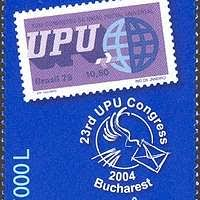 |
| Delcampe | Search in the "Portugal > Full sheets & multiples" category | Delcampe | 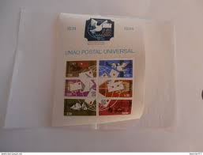 |
| eBay | Portugal Stamp Scott #1225a, Universal Postal Union, Souvenir Sheet MNH SCV$6.50 | eBay | 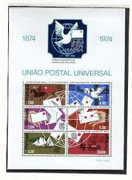 |
| eBay | WHOLESALE: 100 x PORTUGAL Block 15: 100 Jahre Weltpostverein (UPU), (1974), ME = | eBay | 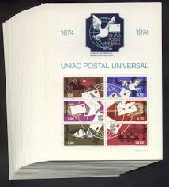 |
| Etsy | 24 Vintage Peace Poster Bundle, No War Retro Wall Art, Printable Peace Artwork , World Peace Liberty Wall Art Poster, Peace Now Home Decor - Etsy | 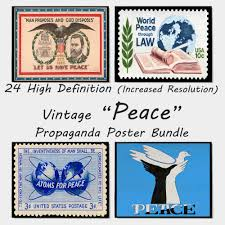 |
| eBay | Djibouti #123 MNH Lot 3491 | eBay | 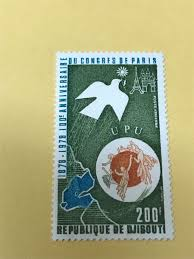 |
| philib.org | LPS Stamp Finder | 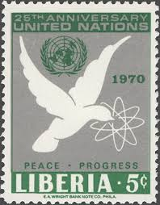 |
| HipStamp | Palau # 291& 292, Peace - Dove, NH, 1/2 Cat. | Australia & Oceania - Palau, General Issue Stamp / HipStamp | 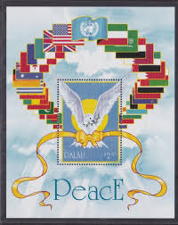 |
| eBay | Pitcairn Island Transportation Postal Stamps for sale | eBay | 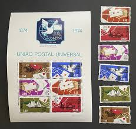 |
| PicClick CA | Cinderellas, Specialty Philately, Stamps - PicClick CA | 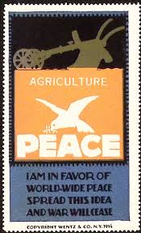 |
| Etsy | Debra Markel's favorite items - Etsy | 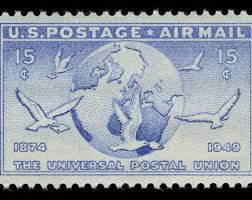 |
| Haiti Philatelic Society | HPS - Stamp Finder | 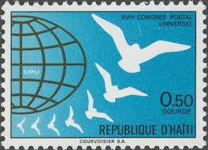 |
| Mystic Stamp Company | 3332 - 1999 45c Universal Postal Union - Mystic Stamp Company | 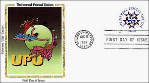 |
| buyhungarianstamps.com | Albania Postwar – Eastern Europe Postage Stamps | Hungaria Stamp Exchange | 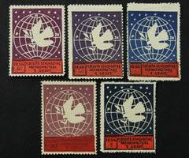 |
| eBay | Portugal Scott #1225a never hinged | eBay | 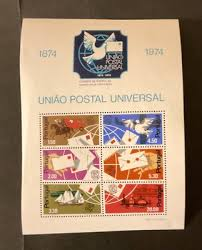 |
| BalkanPhila | 1946 Albania Women Congress Set (*) – BalkanPhila | 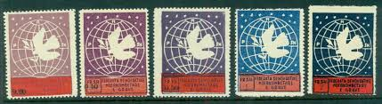 |
| The Royal Philatelic Society London | PEACE' | 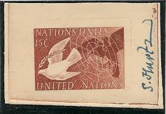 |
| eBay | Full Sheet Macedonian Stamps for sale | eBay | 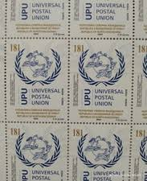 |
| Profil de Marianne Caillaud (marianneclld) | Pinterest | ||
| eBay | Albania Albanien Albanie 1946 MiNr 391/B - 395/B MNH** Women's Congress | eBay | |
| testtrusted.com | Malta Independence 1964 First Day Cover FDC 21st September – 6 Stamp Philatelic | |
| France International at StampsByThemes.com | France International Sale - 65 Page 199 | |
| eBay | MICRONESIA Sc 138-42+142a NH 1V+STRIP+S/S OF 1991-OPERATION DESERT STORM- (JO23) | eBay | |
| Etsy | Stamp Art, Blue Dove, USA, G Rate, Used Stamps - Etsy Canada | |
| eBay | SAAR MK 1957 TAUBE DOVE PIGEON BIRDS CARTE MAXIMUM CARD MC CM bc27 | eBay | |
| Free stamp catalogue | Stamp 2024, Mexico 150 years UPU s/s, 2024 - Collecting Stamps - Freestampcatalogue.com - The free online stampcatalogue with over 500.000 stamps listed. | |
| Postage Stamp Australia, 1979. 150th Anniversary of Western Australia Editorial Photo - Image of drawing, isolated: 263162766 | ||
| eBay | RARE ALBANIA WOMEN'S CONFERENCE MNH LOT POSTER STAMP BLOCKS & STRIP IMEPERF | eBay | |
| eBay | OPC Sc#C43 15c UPU Airmail Photo Essay 41089 | eBay |